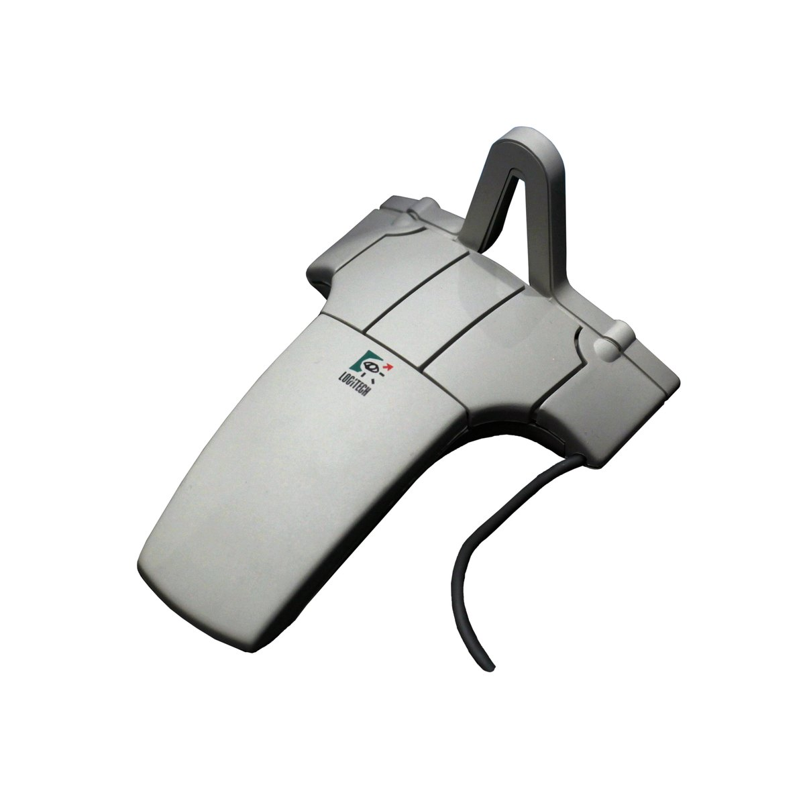

The mouse you lift into the air
The Logitech 3D Mouse (1990) proved you could fly a cursor through free space with ultrasonic sound — but nobody knew what to do with a mouse that didn't need a desk.
In 1990, Logitech shipped a mouse that did not need a desk.
This is more startling than it sounds. A conventional mouse is a planar creature — it reads two axes of motion against a flat surface. Lift it off the pad and its world collapses. You can spin it in the air and the cursor sits still, silently asserting that the only motion that matters is against something.
The Logitech 3D Mouse (Fly Mouse) is the opposite. You pick it up. You point it. You twist it in your hand, and the cursor rotates accordingly because the mouse knows exactly how you are holding it — not just where, but how oriented — in the empty space around it. X, Y, Z translation. Pitch, yaw, roll rotation. All six degrees of freedom, read from the travel time of ultrasonic pulses between the mouse and a base station.
The sensing principle is the rarest in the museum's pointing-device collection. Not a rolling ball, not a reflected grid of infrared, not a pair of strain gauges reading lateral force. Sound. Each click of a digital chronometer calibrated to the speed of sound in air. The mouse fired bursts from its own transducers; the base station listened, triangulated from phase delays, and resolved the hand's position in three dimensions a hundred times a second. No contact. No surface. Just the geometry of a clicking sound traveling.

The design philosophy is the thing worth sitting with. The DLR Control Ball (SpaceMouse) — promoted the same year, also in the museum — reads six degrees of freedom through an isometric, force-sensing spring-centered ball. You push and the machine reads how hard. The Logitech 3D Mouse does the opposite: it is isotonic, free-moving, wand-like. One reads intention through effort; the other reads it through gesture. Together they bracket the two physical metaphors that every 6-DOF controller since has tried to reconcile.
Logitech called it the Fly Mouse, and the name was the promise: lift and move, not slide and click. In a 3D CAD scene on a workstation costing tens of thousands of dollars, gripping the Fly Mouse meant your hand mapped directly onto the space you were manipulating. Twisting the mouse twisted the view. Pulling it toward you zoomed in. There was no translation step, no "drag this slider to rotate" — your hand was already where it needed to be.
It did not survive. The Fly Mouse required a clear line of sight to its base station, a desk free of obstructions, and a user willing to hold a mouse in the air instead of resting a hand on the table. It was a niche product for a niche workflow in an era when 3D graphics were themselves a niche. Logitech moved on, ultrasonic tracking faded, and the desktop mouse stayed pinned to its surface for another two decades.
But it is the museum's only free-space isotonic 6-DOF pointer. The one mouse that asked you to lift it. The one that used sound, not contact. The one that proved, for a brief moment in 1990, that the answer to "how do I move in three dimensions?" was not a better algorithm — it was letting go of the desk.
The DLR SpaceMouse stayed, in force-feedback form, on Space Shuttle Columbia. The Fly Mouse left the catalog and became a collector's curiosity. One had a job. The other had a philosophy. I know which one I think about more.